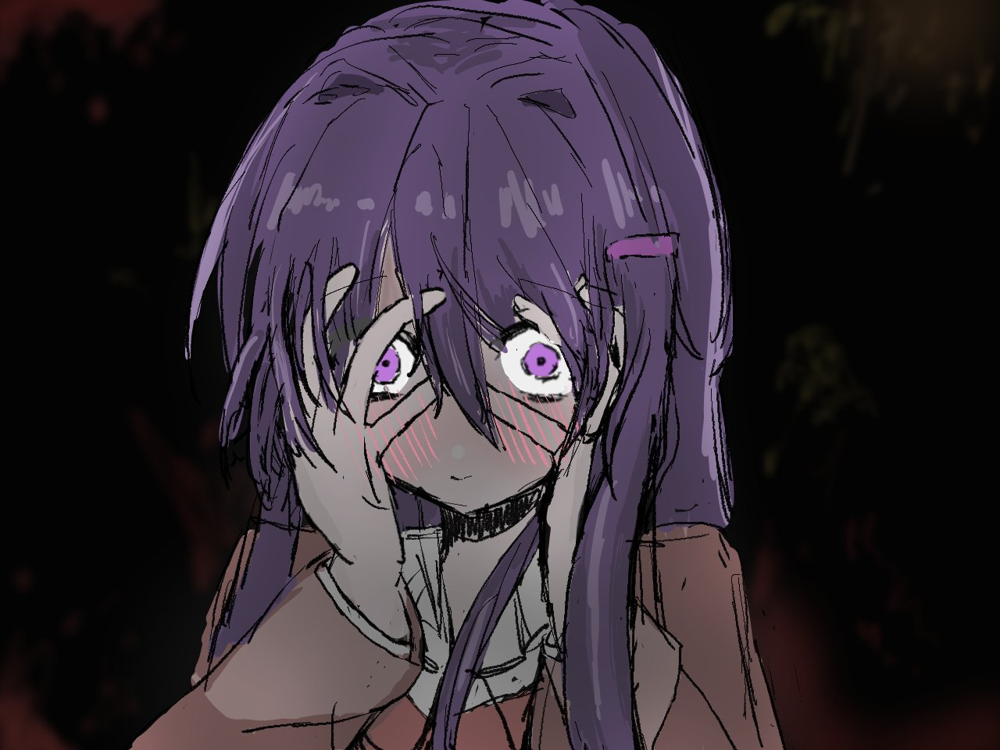

吉他
练习喜欢的旋律，享受一点一点进步。

HELLO, I'M MOMK
欢迎来到 Momk 的个人空间。这里记录我的学习过程，也分享我对吉他的热爱。
认识 Momk我正在一步一步学习编程，希望把想法变成真正可以使用的东西。 学习之外，我很喜欢吉他，它让我保持耐心，也让我享受持续练习的过程。
起点
从认识电脑和网络开始，慢慢产生了探索数字世界的兴趣。
学习
学习网页的基本结构，理解文字、图片和链接是怎样组成页面的。
成果
把学到的知识组合起来，完成并发布了属于自己的第一个网站。
练习喜欢的旋律，享受一点一点进步。
用音乐放松自己，也记录生活中的灵感。
保持好奇和耐心，继续练习新的曲子。
KEEP IN TOUCH
这个网站还在慢慢成长。以后我会在这里放上更多学习记录。
发送邮件给我：123456789@qq.com